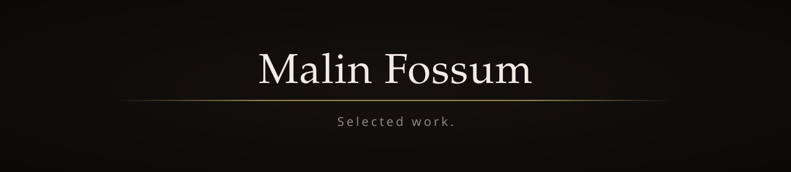

Varde
In progressA bilingual directory of Norwegian social services, built from social-work practice — contact details verified against official sources, so they hold up in a crisis.

I’m a fullstack developer in Norway, building for web and desktop with a focus on accessibility, clean structure, and strong fundamentals. I came to code from social work, and everything I build is open source.
Languages and tools I work with.
A selection of recent work. Every title links to the source.
A bilingual directory of Norwegian social services, built from social-work practice — contact details verified against official sources, so they hold up in a crisis.
A job radar for the Norwegian developer market: it watches public registries for new companies and job ads in my region and tracks the outreach pipeline, from the command line or a local dashboard.
A free, open-source, accessible kanban and project-management tool, built with a teammate. A calm alternative to Trello.
A calm, local-first desktop timer and alarm for Windows, never a flashy notification.
An ADHD-friendly, open-source task app. A small flame, kept going.
A private, local-first daily wellbeing check-in: log mood, energy and sleep, and see the patterns over time. Compassionate reflection, not passive tracking.
Local semantic search over your AI memory files — recall by meaning, cited by source. No server, no API keys, no telemetry.
A music library for physical LPs and CDs. Started as a customer brief in Emne 2 with a teammate; rebuilt as a general-purpose, open-source app.
A warm, OLED-friendly VS Code theme with a distinct hue per token category.
One canonical home for a shared design system, copy-to-start scaffolds for web (Vite) and C#/.NET, and a versioned extract tool that syncs the system into any project.
My own solutions to the backend course in GET Prepared, plus the archive of exercises and small projects from Get Academy.
Social work taught me to listen carefully and meet people where they are. Software, for me, is the same instinct in a different medium. Accessibility and clean structure are how I make sure it shows in the work.